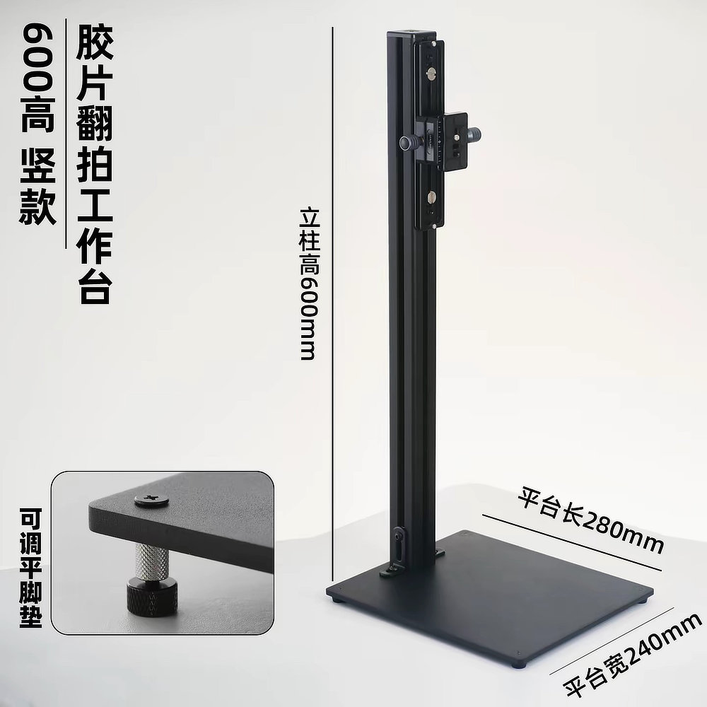
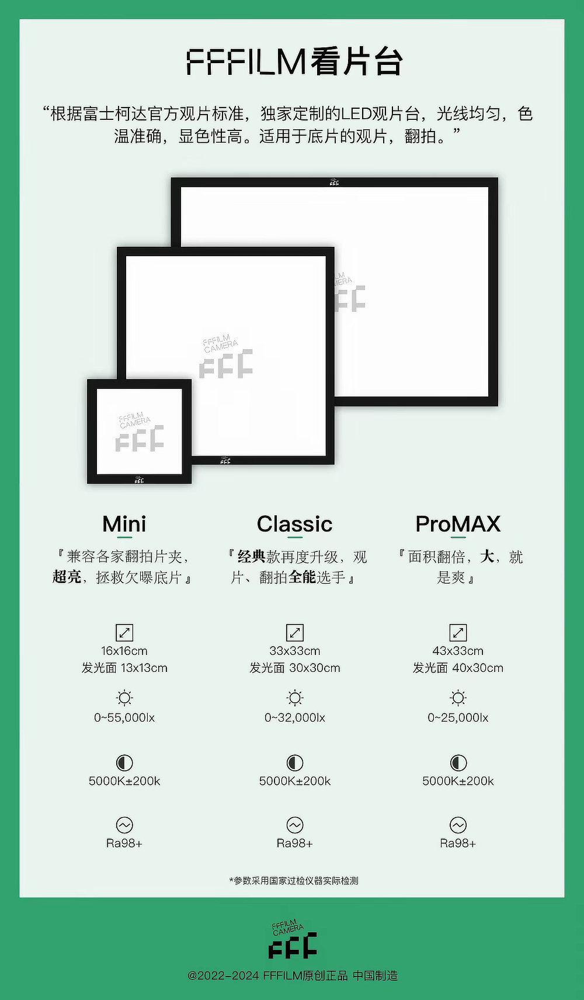
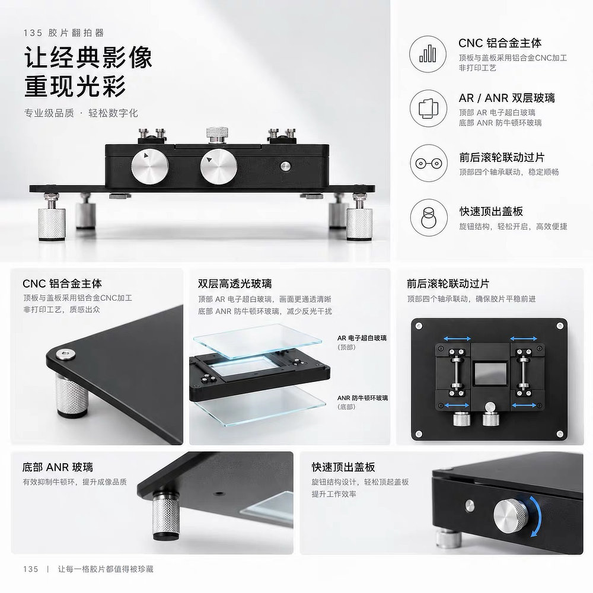
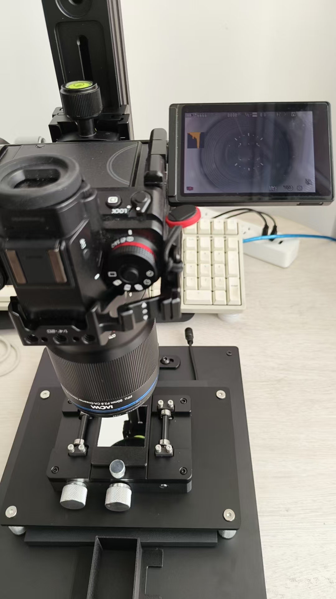
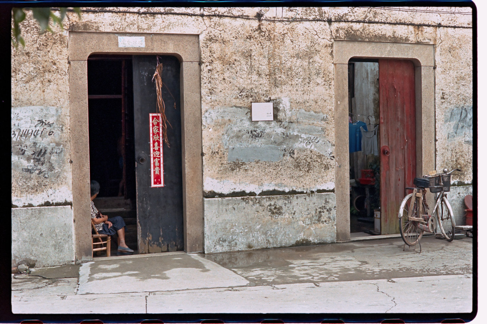

随着数码相机技术不断进步，我逐渐意识到，胶片数码化或许正迎来一个新的技术拐点。
最近重拾胶卷相机后，我在淘宝和小红书上寻找底片冲扫方案，偶然发现不少摄影爱好者分享了自己的胶片翻拍系统。从他们展示的成片来看，只要设备搭配合理、操作得当，相机翻拍也能获得相当出色的画质。这让我开始重新审视自己过去对传统底片扫描仪的依赖。
另一方面，我感觉如今使用胶片相机的人并没有明显减少。胶片摄影似乎还成为了一种别具风格的选择：它既有独特的影像质感，也带着一点专业、严谨的仪式感。
我现有的美能达 Dual 4 底片扫描仪属于入门级设备。它足以满足日常观看和网站发布的需要，但如果想进一步挖掘底片的细节，画质仍有提升空间。于是，我开始认真研究相机翻拍方案。
和朋友商量之后，我们把手头已有的器材与几件专用配件组合起来，没花太大代价，就搭建起了一套可以实际使用的翻拍系统。本文先记录这套系统的硬件组成；至于具体的翻拍流程、软件处理和最终画质比较，可以留待后续测试再展开。
ENGLISH
As digital camera technology continues to advance, I have begun to wonder whether film digitization is reaching a new turning point.
After returning to film photography, I started looking for ways to digitize negatives and came across many camera-scanning setups shared by photographers on Taobao and Xiaohongshu. The results were impressive. With a suitable combination of equipment and careful technique, a digital camera can produce excellent reproductions of film negatives. It challenged my long-held assumption that a dedicated film scanner was the only approach worth considering.
Film photography also seems to remain very much alive. To me, shooting film has become a distinctive choice in its own right, combining a particular image quality with a sense of care, precision, and ritual.
My Minolta Dual Scan IV is an entry-level film scanner. It has served me well for viewing images and publishing them on my website, but there is still room to improve the amount of detail I can extract from a negative. That led me to explore camera scanning more seriously.
After discussing the idea with a friend, we combined equipment we already had with a few purpose-built accessories. The result is a practical film-digitizing setup assembled at a relatively modest cost. This article documents the hardware first; the workflow, software processing, and image-quality comparisons can be covered after further testing.
胶片翻拍系统包含四个部分
1. 相机与微距镜头
相机使用朋友的松下 S1M2E，传感器分辨率为 2400 万像素；在适用的高分辨率像素位移模式下，还可以生成最高约 9600 万像素的图像。镜头则是老蛙 90mm f/2.8 2× APO 微距镜头，最高放大倍率可达 2:1，适合拍摄 135 胶片上的细节。
ENGLISH
1. Camera and macro lens
We use my friend's Panasonic S1M2E, which has a 24-megapixel sensor. Its high-resolution pixel-shift mode can produce images of up to approximately 96 megapixels when conditions permit. The lens is a Laowa 90mm f/2.8 2× APO macro lens, with a maximum magnification of 2:1—more than enough for detailed reproductions of 35mm film.
2. 翻拍架
翻拍架选用的是淘宝店铺“破石显微摄影”的胶片翻拍支架。它负责固定相机，并帮助镜头与底片保持稳定、平行的相对位置。翻拍时，稳定性和对齐精度都很重要。

3. 光源
光源使用淘宝店铺“FFFILM”的 FFFILM 看片台 MINI 版。均匀、稳定的透射光是翻拍底片的重要基础，也有助于减少画面亮度不均带来的后期处理负担。

4. 翻拍台与底片夹
底片承载部分使用淘宝店铺“靓仔模玩工坊”的 LD-film 铝合金 135 胶片底片翻拍器。它用于固定底片，帮助底片保持平整，并让每次翻拍时的位置尽可能一致。

组合后的整体效果
把相机、微距镜头、翻拍架、光源和底片夹组合起来，就是我们目前使用的翻拍系统。实际使用时，还需要留意相机与底片是否平行、画面是否覆盖完整底片，以及光源亮度是否均匀。这些细节都会影响最终结果。

翻拍样片
下面展示一张经过翻拍并完成去色罩处理的样片。它还不能代表不同胶片、不同曝光和不同处理流程下的全部表现，但至少说明，这套系统已经能够完成从底片到数字图像的基本流程。后续我会继续测试细节还原、色彩处理和不同扫描方案之间的差异。

对我来说，这套系统的意义不只是获得更高的潜在分辨率，更重要的是多了一种可以自主控制的底片数字化方式。设备搭建只是第一步，真正值得继续探索的，是如何稳定地获得清晰、准确、可重复的结果。